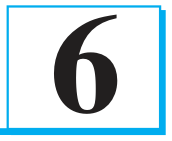
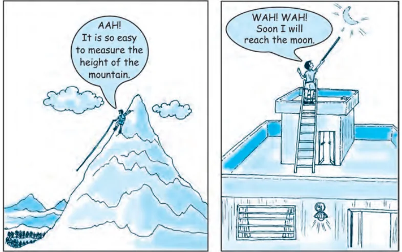

TRIANGLES
You are familiar with triangles and many of their properties from your earlier classes. In Class IX, you have studied congruence of triangles in detail. Recall that two figures are said to be congruent, if they have the same shape and the same size. In this chapter, we shall study about those figures which have the same shape but not necessarily the same size. Two figures having the same shape (and not necessarily the same size) are called similar figures. In particular, we shall discuss the similarity of triangles and apply this knowledge in giving a simple proof of Pythagoras Theorem learnt earlier. Can you guess how heights of mountains (say Mount Everest) or distances of some long distant objects (say moon) have been found out? Do you think these have

been measured directly with the help of a measuring tape? In fact, all these heights and distances have been found out using the idea of indirect measurements, which is based on the principle of similarity of figures (see Example 7, Q.15 of Exercise 6.3 and also Chapters 8 and 9 of this book).